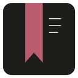

Applications
Every app installs, updates and runs on its own. NorthRay Launcher is the easy way to manage them, but it's never required.

NorthRay Writing Studio Preview
A writing and publishing studio for authors: worlds, series and books, through to finished editions.
Version 0.16.1
CJ Radio Preview
CJ Philip's own radio app: The CJ Philip Show, live and usually on Saturdays.
Version 0.16.1

CJ Philip Community Preview
The home of the CJ Philip apps: get, open and update them in one place.
Version 0.16.1